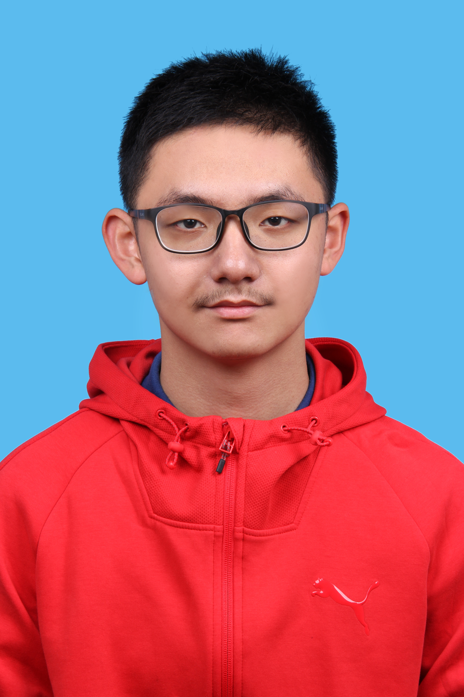

| 专业方向 |
|---|
我刻苦钻研，认真学习，在强者如云的未来精工技术班(北京理工大学的精英班)取得了学年综测 2/29 的成绩。在刻苦学习的同时，我也用实际行动践行学校要求的学科交叉融合。在上一学年里，刚刚新大二的我就代表学校参加了机械工程创新创意大赛，并斩获了国家级一等奖。在学术研究的道路上我也奋力向前：以第一作者的身份发表国家发明专利两项；在Aerospace Science and Technology（中科院一区TOP）上发表论文一篇（共同一作）一篇；主持国家级大创一项；特立书院科研重点团队主持人；师从张军院士。在实习中，我担任了射频模块测试与仿真助理工程师，和导师共同攻克了技术难题，荣获优秀实习生称号。